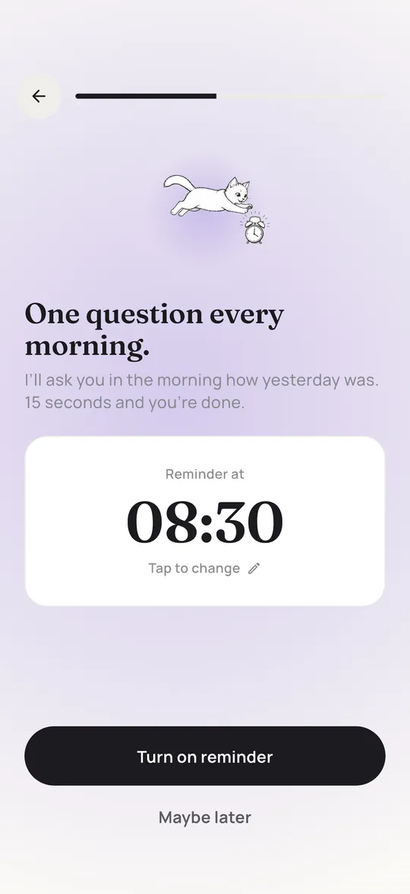
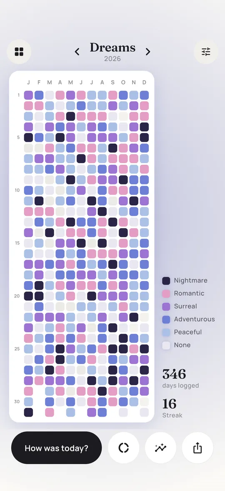
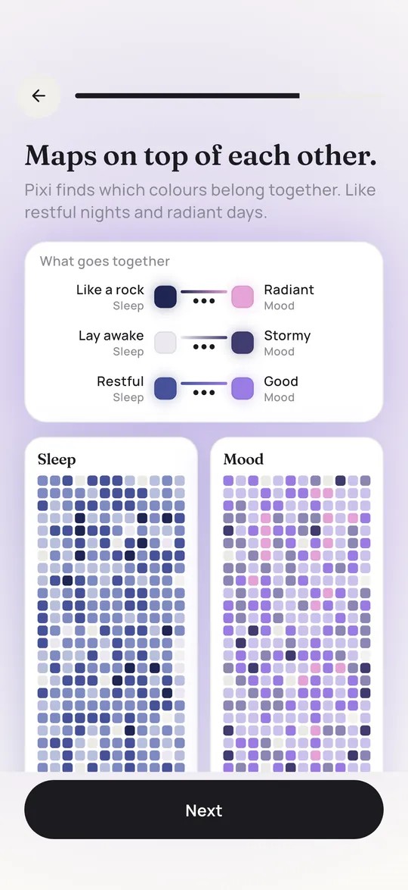
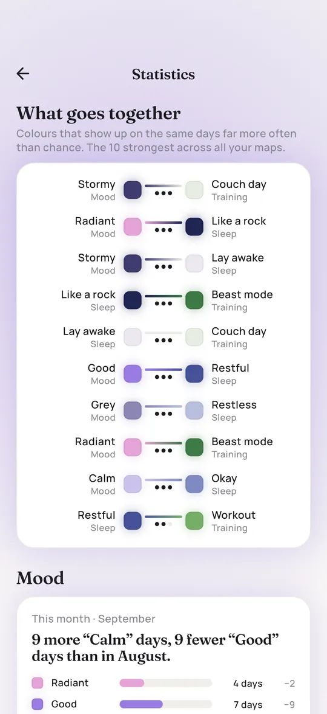
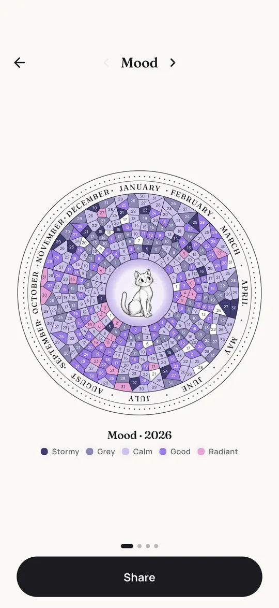
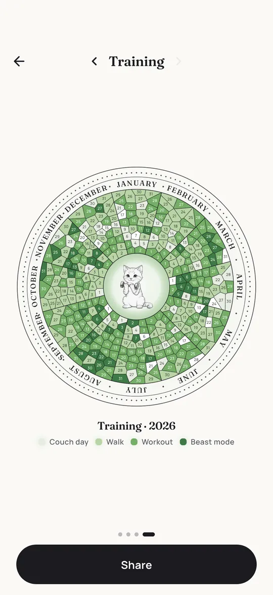

Your year in pixels, one color a day.
Pixi is a Year in Pixels mood tracker for iPhone. Every morning a little sketched cat asks how yesterday was. You tap a color, and week by week your days turn into one glowing picture of your year.
Monthly plan with a 7-day free trial, or pay once.
iPhone now, Android planned.


A year of mornings: 365 taps, one picture. This one is an example. Yours will look like your year.
- Stormy
- Grey
- Calm
- Good
- Radiant
How a day with Pixi works
It takes about 15 seconds. No typing, no blank page, no pressure to write something clever.

1The morning question
Pick a time and Pixi sends one gentle reminder each morning. It always asks about yesterday, so the day is already complete when you rate it.
 2
2Tap a color
Five colors, from Stormy to Radiant. One tap and you are done. Missed a day? Fill it in later.

3Watch the picture grow
Every answer becomes one pixel in a grid of 12 months and 31 days. After a few weeks, patterns start to show on their own.
Track more than mood
In Pixi every question gets its own map. Start with one of the 16 templates below or make your own. Each one comes with colors that already make sense together.
- MoodHow was your mood?Stormy to Radiant
- CriedDid you cry?Dry to Waterfall
- AnxietyHow anxious were you?Zen to Panic
- SocialHow much were you around people?Me-time to Out and about
- GratefulAnything you were grateful for?Not today to Very grateful
- DreamsDid you dream?None to Nightmare
- SleepHow did you sleep?Lay awake to Like a rock
- EnergyHow much energy did you have?Battery empty to Buzzing
- PeriodPeriod?None to Heavy
- PainWere you in pain?Pain-free to Intense
- TrainingDid you train?Couch day to Beast mode
- AlcoholDid you drink alcohol?Sober to Hangover guaranteed
- MeditationDid you meditate?Not today to Deep
- ReadingDid you read?Nothing to Absorbed
- Screen timeHow much screen time?Digital detox to Doomscrolling
- WaterDrank enough?Parched to Well hydrated

Or make your own map. Write your own morning question, pick a base color and set your own levels. Coffee, migraines, sunshine, time outside: if you can answer it in one tap, Pixi can paint it.
See what belongs together
Pixi lays your maps on top of each other and shows which colors tend to show up on the same days. Restful nights and radiant days. Couch days and stormy moods.
It also compares this month with the last one and points out what stands out on certain weekdays. Patterns are not proof, but they are a good start for asking yourself better questions.


Your year as a poster
Every map can turn into a round year wheel with Pixi sitting in the middle, one ring of tiles per month. Share it as an image or print it for the wall.


Private by design
No account
Your entries are saved on your iPhone only. There is no login and no server that holds your maps.
No ads
Pixi shows no ads. We use anonymous usage statistics to improve the app, never your entries. Purchases are handled by Apple.
Export any time
Make a copy of your data from the settings whenever you want. It is yours.
Pixi Premium
Pixi Premium unlocks the whole app. Start with a 7-day free trial on the monthly plan, or pay once for lifetime access.
Monthly
7 days free, then billed monthly
- Unlimited maps
- All templates and custom maps
- Morning reminder
- Statistics and connections across all maps
- Year wheel and poster
- Cancel any time in your Apple account
Lifetime
Pay once, keep it forever
- Everything in the monthly plan
- One payment, no subscription
- Supports a small cat
Prices are shown in the App Store in your currency. The monthly plan renews automatically until you cancel it in your Apple account settings.
Guides
Prefer paper, or want ideas for your own grid? These guides work with or without the app.
- Year in Pixels templateA free printable grid for A4 and US Letter, plus how to set it up and keep going.
- Year in Pixels ideasOver 30 things worth tracking besides mood, with ready made color levels.
- Year in Pixels color keyHow to build a legend that still makes sense in December, with six palettes.
- Bullet journal mood trackerEight layouts for your journal, from simple grids to mood circles.
- How to keep a mood diaryWhat to write down, how often, and what a mood diary can and can't tell you.
Questions and answers
What is a Year in Pixels?
A Year in Pixels is a grid with one small square for every day of the year. You color each square based on how that day went, most often your mood. After a few months you can see your whole year at a glance. The idea comes from bullet journaling, and Pixi is the app version of it.
Is Pixi free?
Pixi is free to download. To use it you need Pixi Premium, which unlocks the whole app: unlimited maps, all templates, the morning reminder, statistics and connections, the year wheel and the poster. Start with a 7-day free trial on the monthly plan, or pay once for lifetime access. The printable Year in Pixels templates on this website are free.
Is there an Android version?
Not yet. Pixi is available for iPhone on the App Store. An Android version is planned.
Where is my data stored?
Only on your iPhone. Pixi has no account and no server that stores your entries. You can export a copy of your data in the settings whenever you like.
Can I fill in a day I missed?
Yes. Missed days can be filled in later. The morning question asks about yesterday, so you never have to rate a day before it is over.
Can I track more than my mood?
Yes. There are templates for sleep, dreams, energy, period, pain, training, alcohol, meditation, reading, water, screen time, gratitude and more. You can also create your own map with your own question, colors and levels.
Is Pixi a therapy or medical app?
No. Pixi is a journal that helps you notice patterns. It does not diagnose anything and is not a replacement for professional help. If you are struggling, please talk to a doctor or a mental health professional.

Made by Caspar
Hi, I'm Caspar, an indie developer in Berlin. I build Pixi on my own and I read every message. If something is missing or broken, tell me on X (@casparbuilds) or by email.

No need to wait for January
Your grid starts on the day you do. One question tomorrow morning, one color, and the first pixel is there.
Download on the App Store